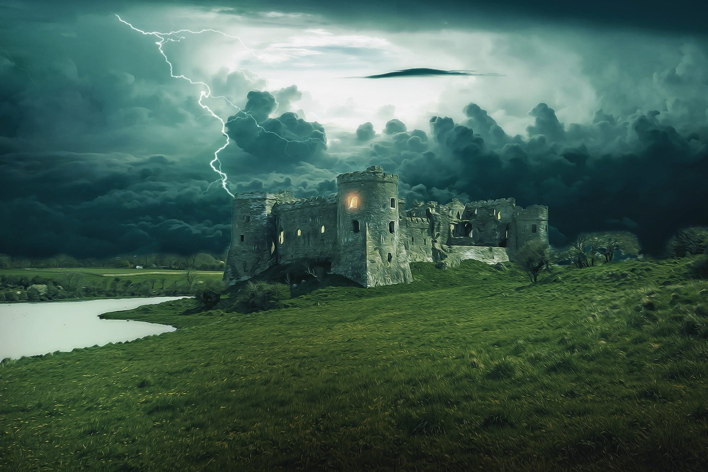

Scelta 2.2.2: Se ne va in cerca di nuove avventure
Mentre Christian faceva tutti i suoi viaggi, Fabrix Schwarzenegger, dopo la cocente sconfitta, decise di diventare l'uomo più potente della terra, diventa imperatore di un impero molto molto molto grande ma era molto molto molto cattivo. Saputolo Cristian deve decidere se andare alla sua caccia e ucciderlo per diventare lui l'uomo più potente del mondo.
